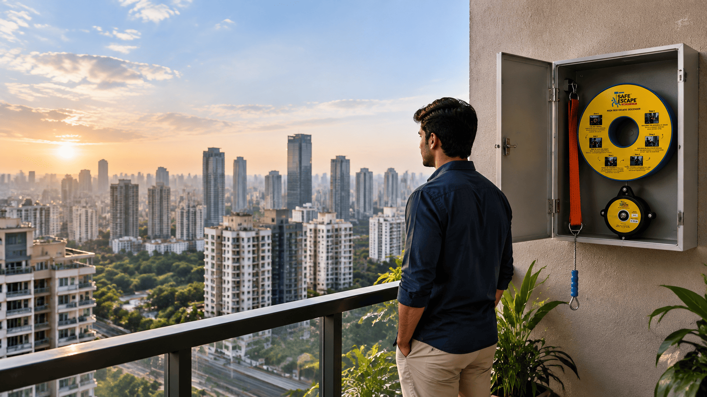
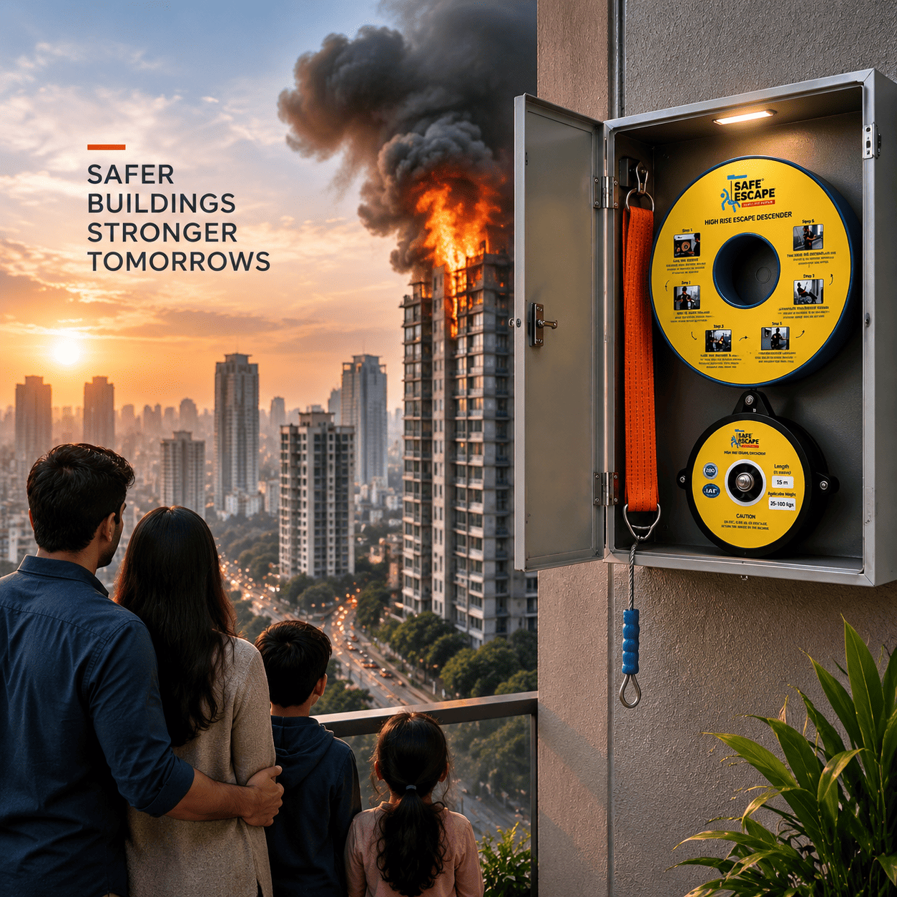

Controlled and regulated descent
Provides controlled and regulated descent during emergency evacuation situations.
HOME / ABOUT
ABOUT SAFE ESCAPE
India’s rapid urbanization has transformed the way people live and work. High-rise residential towers, corporate offices, IT parks, hotels, hospitals, shopping complexes and industrial facilities are now a familiar part of the urban landscape.

HIGH-RISE READY
MECHANICAL DESCENT SYSTEM
But as buildings become taller and more complex, safe evacuation during a fire or other emergency becomes an increasingly important consideration.
Recent fire incidents across Indian cities have once again highlighted a difficult reality: having fire extinguishers, alarms, hydrants and sprinkler systems is essential, but **the ability to actually evacuate people when conventional exits become inaccessible can be equally critical**. In one recent Delhi case, a fire at a Hotel building in Malviya Nagar that killed many people was linked by investigators to inadequate fire-safety measures and the absence of a proper fire exit.
It is in this space that SAFE ESCAPE – YOUR RESCUE PARTNER™ is emerging as an additional evacuation option for high-rise buildings.
CONTROLLED DESCENT SYSTEM
SAFE ESCAPE is a controlled descent emergency evacuation system designed to provide an alternative route from elevated floors when stairs or conventional exits are blocked, inaccessible or unsafe.
The concept is straightforward. A SAFE ESCAPE unit can be installed at a designated evacuation point such as a balcony or suitable structural location. During an emergency, an occupant wearing the supplied safety harness connects to the descent system and exits the building through the designated point.
The system then provides a controlled descent towards the ground.
The objective is not to replace conventional fire-safety systems or emergency staircases. Instead, it is to add another layer of preparedness for situations where the normal evacuation route may not be usable.

SYSTEM DESIGN
The SAFE ESCAPE system incorporates an automatic braking/controlled-descent mechanism, high-strength wire rope and safety components designed for emergency evacuation applications.
The base model is supplied with a 15-metre descent length, suitable for the corresponding installation requirement. Longer wire lengths can be provided for higher floors at an additional cost depending on the required floor level and length.
SYSTEM FEATURES
The system is intended for emergency use only, and proper installation, user familiarisation and periodic inspection remain important parts of any responsible evacuation plan.
Provides controlled and regulated descent during emergency evacuation situations.
Automatic braking mechanism designed to support controlled operation during emergency use.
High-strength wire rope and safety components designed for emergency evacuation applications.
Supplied safety harness system helps occupants connect with the descent system during emergency use.
Designed with flexible installation options including suitable wall or balcony evacuation points.
Compact and relatively easy-to-store design for maintaining emergency readiness.
Designed for simple emergency operation with proper user familiarisation and guidance.
Components tested through NABL-accredited laboratory facilities.
Provides installation and technical guidance for responsible system setup.
Annual inspection is recommended to support continued system readiness.
5-year warranty as offered by the company, subject to applicable terms.
The device costs very low considering the number of years it can last.
WHO CAN BENEFIT FROM SAFE ESCAPE?
SAFETY PREPAREDNESS
A fire emergency can change conditions inside a building within minutes. Smoke can make corridors difficult to navigate, fire can restrict access to particular floors, and panic can make evacuation even more challenging.
For facility managers, safety officers, administrators and senior management, the question is therefore not simply “Do we have fire-fighting equipment?” but also:
“If our normal escape route becomes unavailable, what additional options do our people have?”
That question is increasingly relevant as Indian authorities place greater emphasis on building fire-safety preparedness.
IMPORTANT POSITION
SAFE ESCAPE does not claim to replace fire-safety systems. It aims to add another possible route when conventional evacuation becomes difficult. SAFE ESCAPE does not replace mandated exits, alarms, sprinklers, fire extinguishers, evacuation plans, building compliance requirements or professional emergency services. Building owners and users should maintain all applicable fire-safety measures.
THE COMPANY
SAFE ESCAPE is being marketed in India by Innovative Ideaz Global Private Limited, with a focus on making controlled-descent evacuation technology accessible to corporate organizations, building owners, facility-management companies, RWAs, hotels, hospitals, institutions and other high-rise establishments.
The company is also developing opportunities for corporate installations, bulk requirements, fire-safety dealers and project-based deployments across India.
For organizations responsible for hundreds or thousands of employees, residents, guests or visitors, investing in emergency preparedness is ultimately about more than equipment. It is about planning for the situation nobody wants to face.
TAKE THE NEXT STEP